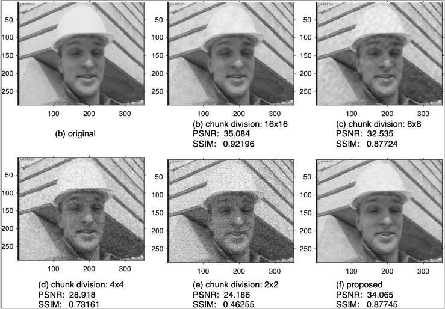
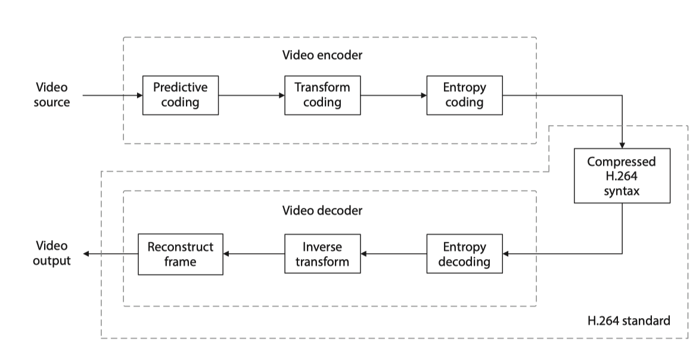

|
Coursework and Examination
|
|
- Courses
| Academic Year |
Course code |
Course name |
2017 Fall
|
ELEC 6120 |
Telecommunication and Networks |
| MATH 6200 |
Analysis I |
| MATH 6750 |
Graph Theory |
| 2018 Spring |
MATH 6210 |
Analysis II |
| INSY 7420 |
Linear Programming |
| ELEC 7970 |
Advanced Intelligent System |
| ELEC 8120 |
Principles of Network Analysis |
| 2018 Fall |
MATH 7200 |
Real Analysis I |
| MATH 7370 |
Matrices |
| STAT 7020 |
Regression Analysis |
| 2019 Spring |
MATH 7210 |
Real Analysis II |
- Course project
- Ph.D. qualifying exam, Passed on Nov 2017.
|

|
Metadata-Reduction for Soft Video Delivery
Ticao Zhang, Shiwen Mao
IEEE Networking Letters, vol 1, no 2, pp 84-88, June 2019.
We proposed a blind data detection method that recovers the video signals from the squared amplitude of the received signals. This method is almost metadata free.
|
|

|
An Overview of Emerging Video Coding Standards
Ticao Zhang, Shiwen Mao
ACM GetMobile, vol.22, no.4, pp.13-20, Dec. 2018.
we provide an overview of existing and emerging video coding standards.
|
|
- The reviewer of IEEE transactions on Multimedia (17-Aug-2019, 11-Mar-2019, 21-Feb-2019, 11-Dec-2018, 05-Nov-2018,10-Oct-2018, 13-Aug-2018, 19-Jun-2018)
- Program Committee Member and Reviewer of MobiQuitous 2019 (Aug-2019)
- The reviewer of MobiQuitous 2018 (Aug-2018)
- The reviewer of IEEE Networking Letters (01-July-2019)
- The reviewer of China Communications (14-Aug-2019)
- The reviewer of ICCC (Jun-2019)
- The reviewer of the journal Digital Communications and Networks (Sep-2018)
|
| |
{kind=link}